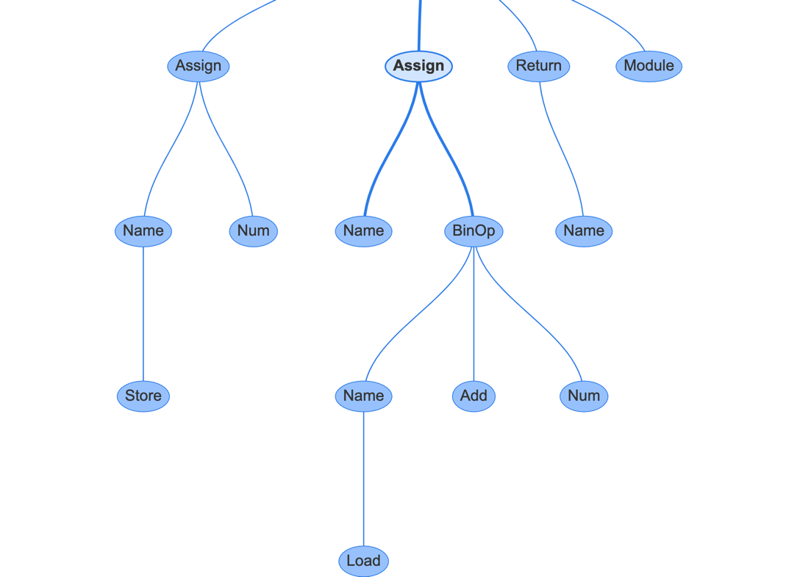
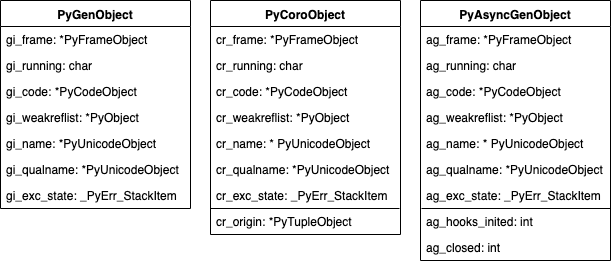

CPython解释器¶
编码规范¶
像PEP8一样，CPython也有自己的一套编码规范，为PEP7，有一些命名规范可以帮助我们更好的阅读源码:
- 使用
Py前缀的方法为公共方法，但不会用于静态方法。Py_前缀是为Py_FatalError这样的全局服务性函数保留的，对于特殊的类型(比如某类对象的API)会使用更长的前缀，例如PyString_都是字符串类的方法 - 公共函数和变量使用驼峰加上下划线，例如PyObject_GetAttr, Py_BuildValue, PyExc_TypeError等
- 偶尔有一些内部的函数，却需要对加载器可见，我们使用
_Py前缀，例如_PyObject_Dump - 宏使用驼峰前缀加大写，例如PyString_AS_STRING, Py_PRINT_RAW等
执行方式¶
程序入口¶
Python的执行方式有五种:
- 使用
python -c执行单条语句 - 使用
python -m执行某个模块 - 通常使用的运行某个文件
- 使用shell的管道连接，将
stdin的内容作为python的输入 - 使用交互式命令行环境(REPL)
通过这三个文件，我们能观察到一个整体的执行过程:
- Programs/python.c，一个简单的最初的程序入口
- Modules/main.c，把整个执行过程的抽象打包再一起，包含加载环境信息、执行代码和清理内存
- Python/initconfig.c，从系统中加载环境变量等信息，以及命令行中的参数等
{{< highlight c>}}
int main(int argc, char **argv) { // unix平台是_Py_UnixMain，windows平台是Py_Main return _Py_UnixMain(argc, argv); } {{< /highlight >}}
然后是选择执行模式: {{< highlight c>}}
int _Py_UnixMain(int argc, char **argv) { return pymain_main(&pymain); }
static int pymain_main(_PyMain *pymain) { pymain_init(pymain); int res = pymain_cmdline(pymain); if (res < 0) { _Py_FatalInitError(pymain->err); } if (res == 1) { goto done; } pymain_init_stdio(pymain); // 初始化 pymain->err = _Py_InitializeCore(&pymain->config); // 执行逻辑 pymain_run_python(pymain); if (Py_FinalizeEx() < 0) { pymain->status = 120; } done: // 退出清理 pymain_free(pymain); return pymain->status; }
static void pymain_run_python(_PyMain *pymain) { PyCompilerFlags cf = {.cf_flags = 0}; pymain_header(pymain); pymain_import_readline(pymain); // 执行模式选择 if (pymain->command) { // 命令行模式 -c pymain->status = pymain_run_command(pymain->command, &cf); } else if (pymain->module) { // 模块模式 -m pymain->status = (pymain_run_module(pymain->module, 1) != 0); } else { // 入口文件模式 pymain_run_filename(pymain, &cf); } pymain_repl(pymain, &cf); } {{< /highlight >}}
这个流程图能清晰的表达出上述代码:

运行时环境¶
通过上图，我们可以看到无论执行任何python代码，运行时首先会建立相关环境。这个环境在Include/cpython/initconfig.h中定义为PyConfig，该结构体中的数据包括:
- 运行模式的标记，比如debug或optimized模式
- 执行的模式，比如是以文件的方式、或者模块的方式、stdin的方式
- 通过
-X <option>附加的拓展选项 - 运行时设置的环境变量
这些值，我们也可以在运行时中查看到: {{< highlight python>}} [ubuntu] /tmp/missing/tt $ python3 -X dev -q -v
import sys sys.flags sys.flags(debug=0, inspect=0, interactive=0, optimize=0, dont_write_bytecode=0, no_user_site=0, no_site=0, ignore_environment=0, verbose=1, bytes_warning=0, quiet=1, hash_randomization=1, isolated=0) sys._xoptions {'dev': True} {{< /highlight >}}
-c的方式¶
例如python -c "print('hi')"，它的运行流程如图所示:

pymain_run_command()的核心逻辑如下: {{< highlight c>}} // 首个参数就是-c传递的指令 // wchar_t*类型通常是CPython中用于存储Unicode数据的低级存储类型，因为该类型的大小也可以存储UTF8字符 static int pymain_run_command(wchar_t *command, PyCompilerFlags *cf) { PyObject *unicode, *bytes; // 转换为PyUnicode对象 unicode = PyUnicode_FromWideChar(command, -1); // 对unicode进行utf8编码得到一个python字节对象 bytes = PyUnicode_AsUTF8String(unicode); // 重新解码为字符串丢去执行 ret = PyRun_SimpleStringFlags(PyBytes_AsString(bytes), cf); return (ret != 0); } {{< /highlight >}}
而PyRun_SimpleStringFlags()的目的是创建一个Python模块__main__，和一个字典，再将命令一起打包调用PyRun_StringFlags()，这个函数将创建一个假的文件名，接着就是调用Python解析器创建AST并返回模块mod了:
{{< highlight c>}}
int
PyRun_SimpleStringFlags(const char *command, PyCompilerFlags *flags)
{
PyObject *m, *d, *v;
// 建立入口模块
m = PyImport_AddModule("main");
// 创建字典，用于globals()和locals()
d = PyModule_GetDict(m);
v = PyRun_StringFlags(command, Py_file_input, d, d, flags);
return 0;
}
PyObject * PyRun_StringFlags(const char *str, int start, PyObject *globals, PyObject *locals, PyCompilerFlags *flags) { ... mod = PyParser_ASTFromStringObject(str, filename, start, flags, arena); ret = run_mod(mod, filename, globals, locals, flags, arena); PyArena_Free(arena); return ret; {{< /highlight >}}
-m的方式¶
另一种执行Python命令的方式是-m选项和模块名称，例如python -m unittest可以运行标准库中的unittest模块。实际上它就是在sys.path中去搜索名为unittest的模块然后去执行。
CPython是先通过一个C的API函数PyImport_ImportModule()来导入标准库runpy，它返回的是一个PyObject核心对象类型，然后需要一些特殊的方法获取它的属性再调用。例如hi.upper()相当于hi.upper.__call__()，在C中PyObject_GetAttrString()就是用来获得hi的upper属性，然后通过PyObject_Call()就是去执行__call__()。
{{< highlight c>}}
// modname就是通过-m传递进来的参数
static int
pymain_run_module(const wchar_t *modname, int set_argv0)
{
PyObject *module, *runpy, *runmodule, *runargs, *result;
runpy = PyImport_ImportModule("runpy");
...
runmodule = PyObject_GetAttrString(runpy, "_run_module_as_main");
...
module = PyUnicode_FromWideChar(modname, wcslen(modname));
...
runargs = Py_BuildValue("(Oi)", module, set_argv0);
...
result = PyObject_Call(runmodule, runargs, NULL);
...
if (result == NULL) {
return pymain_exit_err_print();
}
Py_DECREF(result);
return 0;
}
{{< /highlight >}}
这段代码说明python -m <module>本质上是python -m runpy <module>，module只是参数，runpy对其进行了一层包装。runpy是用纯python写的位于Lib/runpy.py，它的目的是抽象在不同操作系统上定位和执行模块的过程，具体干这些事:
- 调用用户提供的模块的
__import__()方法 - 设置该模块的名字空间为
__main__ - 在
__main__的名字空间下执行该模块
runpy模块同样也可以用来执行某个目录或者zip文件。
file的方式¶
如果是python test.py这种方式，CPython会打开一个文件句柄，然后传递给Python/pythonrun.c中的PyRun_SimpleFileExFlags()方法:
{{< highlight c>}}
int
PyRun_SimpleFileExFlags(FILE *fp, const char *filename, int closeit,
PyCompilerFlags *flags)
{
...
m = PyImport_AddModule("main");
...
// 如果是pyc文件，则调用run_pyc_file()
if (maybe_pyc_file(fp, filename, ext, closeit)) {
...
v = run_pyc_file(pyc_fp, filename, d, d, flags);
} else {
// .py和stdin模式都运行PyRun_FileExFlags()
if (strcmp(filename, "
而PyRun_FileExFlags()和前文介绍的通过-c输入的PyRun_SimpleStringFlags()作用类似，都是去创建AST返回mod然后运行mod: {{< highlight c>}} PyObject * PyRun_FileExFlags(FILE *fp, const char *filename_str, int start, PyObject *globals, PyObject *locals, int closeit, PyCompilerFlags *flags) { ... mod = PyParser_ASTFromFileObject(fp, filename, NULL, start, 0, 0, flags, NULL, arena); ... ret = run_mod(mod, filename, globals, locals, flags, arena); } {{< /highlight >}}
run_mod()负责把模块发送给AST编译为一个代码对象，即文章开头提到过的存储字节码以及保存在.pyc文件中的对象: {{< highlight c>}} static PyObject * run_mod(mod_ty mod, PyObject *filename, PyObject *globals, PyObject *locals, PyCompilerFlags *flags, PyArena *arena) { PyCodeObject *co; PyObject *v; co = PyAST_CompileObject(mod, filename, flags, -1, arena); v = run_eval_code_obj(co, globals, locals); return v; } {{< /highlight >}} 之后的run_eval_code_obj()就属于执行逻辑了，后文中再描述。
run_pyc_file()可以理解为省略了创建AST的过程，而是通过marshal把pyc文件中的内容复制到内存并将其转换为特定的数据结构。硬盘上的pyc文件就是CPython编译器缓存已编译代码的方式，因此无需每次调用脚本时再编译一次: {{< highlight c>}} static PyObject * run_pyc_file(FILE *fp, const char *filename, PyObject *globals, PyObject *locals, PyCompilerFlags *flags) { PyCodeObject *co; PyObject *v; ... v = PyMarshal_ReadLastObjectFromFile(fp); ... co = (PyCodeObject *)v; v = run_eval_code_obj(co, globals, locals); return v; } {{< /highlight >}}
编译¶
语义解析¶
在前文中我们了解到在执行时会先去创建AST，那么这步具体是怎么做的呢: {{< highlight c>}} mod_ty PyParser_ASTFromFileObject(FILE fp, PyObject *filename, const char enc, int start, const char *ps1, const char *ps2, PyCompilerFlags *flags, int *errcode, PyArena *arena) { ... node *n = PyParser_ParseFileObject(fp, filename, enc, &_PyParser_Grammar, start, ps1, ps2, &err, &iflags); ... if (n) { flags->cf_flags |= iflags & PyCF_MASK; mod = PyAST_FromNodeObject(n, flags, filename, arena); PyNode_Free(n); ... return mod; } {{< /highlight >}} 在PyParser_ASTFromFileObject()方法中，会将文件句柄、编译器标志、以及内存块对象打包给PyParser_ParseFileObject()转换为一个node对象: {{< highlight c>}} node * PyParser_ParseFileObject(FILE *fp, PyObject *filename, const char *enc, grammar *g, int start, const char *ps1, const char *ps2, perrdetail *err_ret, int *flags) { struct tok_state *tok; ... if ((tok = PyTokenizer_FromFile(fp, enc, ps1, ps2)) == NULL) { err_ret->error = E_NOMEM; return NULL; } ... return parsetok(tok, g, start, err_ret, flags); } {{< /highlight >}} 该方法把两项重要的任务组合了起来，一是使用PyTokenizer_FromFile()实例化一个tok_state，tok_state也只是一个数据结构(容器)，存储由tokenizer生成的临时数据；二是使用parsetok()将token转换为一个具体的解析树(节点列表)。
在parsetok()中，将循环调用tok_get()方法，该方法像是一个迭代器，不断获取解析树的下一个token，parsetok()在根据不同token设置tok_state中相关的值。它也是CPython中最复杂的方法之一，因为要兼容各种各样的边缘情况、数十年的历史原因、新的语言特性等等原因。我们来看其中一种简单的解析，如何把每行结尾变为tokenNEWLINE的:
{{< highlight c>}}
static int
tok_get(struct tok_state tok, char **p_start, char **p_end)
{
...
/ Newline /
if (c == '\n') {
tok->atbol = 1;
if (blankline || tok->level > 0) {
goto nextline;
}
*p_start = tok->start;
*p_end = tok->cur - 1; / Leave '\n' out of the string /
tok->cont_line = 0;
if (tok->async_def) {
/ We're somewhere inside an 'async def' function, and
we've encountered a NEWLINE after its signature. */
tok->async_def_nl = 1;
}
return NEWLINE;
}
...
}
{{< /highlight >}}
parsetok()返回的是一个node节点类型:
{{< highlight c>}}
typedef struct _node {
short n_type;
char *n_str;
int n_lineno;
int n_col_offset;
int n_nchildren;
struct _node *n_child;
int n_end_lineno;
int n_end_col_offset;
} node;
{{< /highlight >}}
这些个节点组成的树我们叫CST，每个节点包含了语法、tokenID、符号，但这个树不能用于编译器做出快速决策，编译器需要更高一级抽象即AST，我们可以通过内部的API观察到CST的输出结果:
{{< highlight python>}}
import symbol
import token
import parser
为了输出结果的可读性，做了一层处理¶
def lex(expression): symbols = {v: k for k, v in symbol.dict.items() if isinstance(v, int)} tokens = {v: k for k, v in token.dict.items() if isinstance(v, int)} lexicon = {**symbols, **tokens} st = parser.expr(expression) st_list = parser.st2list(st) def replace(l: list): r = [] for i in l: if isinstance(i, list): r.append(replace(i)) else: if i in lexicon: r.append(lexicon[i]) else: r.append(i) return r return replace(st_list)
小写的就是符号，大写的就是token¶
pprint(lex('a + 1')) ['eval_input', ['testlist', ['test', ['or_test', ['and_test', ['not_test', ['comparison', ['expr', ['xor_expr', ['and_expr', ['shift_expr', ['arith_expr', ['term', ['factor', ['power', ['atom_expr', ['atom', ['NAME', 'a']]]]]], ['PLUS', '+'], ['term', ['factor', ['power', ['atom_expr', ['atom', ['NUMBER', '1']]]]]]]]]]]]]]]]], ['NEWLINE', ''], ['ENDMARKER', '']] {{< /highlight >}}
AST¶
CPython的下一个阶段就是将CST转换为能够执行的、更有逻辑的东西，也就是AST(Abstract Syntax Trees，抽象语法树)。虽然这一步是解释器内联生成，我们也有其他办法能方便的观察到，例如使用instaviz库，它能在一个网页中展示AST以及每个节点的属性:
{{< highlight python>}}
import instaviz def example(): a = 1 b = a + 1 return b instaviz.show(example) {{< /highlight >}} 我们能看到这样的界面:

然后可以点击AST中的节点:

例如如果点击图中的Assign节点，它代表的是b=a+1这一行，右侧会展示出这个节点的属性，它有两个属性，一个是targets，代表变量名称，它有时可能是一个列表，因为解包操作就会有多个变量；另一个是value，代表变量的值，在这里就是a+1这个表达式。如果我们再点击BinOp节点，就可以看到它的3个属性，left表示运算符左边是什么，op表示运算符，right表示运算符右边。
用C语言编译AST并不是一件容易的事，所以实际上真正的编译模块有5000行代码，在Python/ast.c中。
具体到核心代码流程来说，之前通过PyParser_ParseFileObject()得到的CST对象node，接着传入PyAST_FromNodeObject()，并附带文件名、编译flag和PyArena。得到函数返回的mod_ty，是一个容器结构，属于Python5种模块类型之一:Module、Interactive、Expression、FunctionType、Suite。在Include/Python-ast.h中能看到每种类型需要的字段:
{{< highlight c>}}
enum _mod_kind {Module_kind=1, Interactive_kind=2, Expression_kind=3,
FunctionType_kind=4, Suite_kind=5};
struct _mod {
enum _mod_kind kind;
union {
struct {
asdl_seq *body;
asdl_seq *type_ignores;
} Module;
struct {
asdl_seq *body;
} Interactive;
struct {
expr_ty body;
} Expression;
struct {
asdl_seq *argtypes;
expr_ty returns;
} FunctionType;
struct {
asdl_seq *body;
} Suite;
} v;
};
{{< /highlight >}}
除了模块类型，其他的AST类型都列在Parser/Python.asdl中，包括statement、expression、operators、comprehensions等等。在该文件中我们能看到类型字段的定义也是用在这里的:
{{< highlight c>}}
-- ASDL's 5 builtin types are:
-- identifier, int, string, object, constant
module Python { mod = Module(stmt* body, type_ignore type_ignores) | Interactive(stmt body) | Expression(expr body) | FunctionType(expr* argtypes, expr returns) {{< /highlight >}}
接着，PyAST_FromNodeObject()使用TYPE(n)确定首个CST节点的类型来执行不同的逻辑，如果是文件输入，返回的结果就是Module，eval_input就是Expression，总之是Module, Interactive, Expression, FunctionType中的一种: {{< highlight c>}} mod_ty PyAST_FromNodeObject(const node n, PyCompilerFlags *flags, PyObject *filename, PyArena *arena) { ... switch (TYPE(n)) { case file_input: stmts = _Py_asdl_seq_new(num_stmts(n), arena); for (i = 0; i < NCH(n) - 1; i++) { ch = CHILD(n, i); if (TYPE(ch) == NEWLINE) continue; num = num_stmts(ch); if (num == 1) { s = ast_for_stmt(&c, ch); } else { ch = CHILD(ch, 0); REQ(ch, simple_stmt); for (j = 0; j < num; j++) { s = ast_for_stmt(&c, CHILD(ch, j * 2)); } } } / Type ignores are stored under the ENDMARKER in file_input. */ ... res = Module(stmts, type_ignores, arena); break; case eval_input: { expr_ty testlist_ast; testlist_ast = ast_for_testlist(&c, CHILD(n, 0)); res = Expression(testlist_ast, arena); break; } case single_input: ... break; case func_type_input: ... ... return res; } {{< /highlight >}}
遍历孩子节点并创建相应的AST语句节点逻辑在ast_for_stmt()中，该函数内还需要再根据不同的语句类型调用不同的函数创建节点，都是类似于ast_for_*()，例如2**4这样的语句最终能找到ast_for_power()这样的方法。
编译过程¶
现在解释器有了AST，也就有了每个操作、函数、类和名字空间所需要的属性，下一步就是把AST编译为CPU能够理解的东西，这就是编译。编译可以分为两个部分:一是遍历树并创建一个控制流图(control-flow-graph)，用来表示逻辑执行的顺序；另外就是将控制流图中的节点转换为较小的可执行语句，称为字节码。
PyAST_CompileObject()函数是编译器部分的主要入口，它以Python模块作为主要参数，同解释器进程早期创建过的文件名称、全局变量、局部变量以及PyArena一起打包传入。然后先创建一个全局的编译器状态结构体，用来存储一些属性、编译标识、栈等等: {{< highlight c>}}
struct compiler {
PyObject c_filename;
struct symtable *c_st;
PyFutureFeatures *c_future; / pointer to module's future /
PyCompilerFlags *c_flags;
int c_optimize; / optimization level /
int c_interactive; / true if in interactive mode /
int c_nestlevel;
int c_do_not_emit_bytecode;
PyObject *c_const_cache; / Python dict holding all constants, including names tuple /
struct compiler_unit *u; / compiler state for current block /
PyObject *c_stack; / Python list holding compiler_unit ptrs /
PyArena *c_arena; / pointer to memory allocation arena */
};
{{< /highlight >}}
接着有11个主要步骤:
- 如果模块不存在
__doc__则创建一个新的 - 如果模块不存在
__annotations__则创建一个新的 - 设置全局编译器状态中的文件名为传入的文件名
- 将编译器的内存区域设置为解释器使用的那个
- 将模块中所有的
__future__标识复制至全局编译器状态中 - 合并命令行或环境变量中提供的运行时标识
- 启用编译器中所有的
__future__ - 设置编译的优化级别为参数提供的，或者是默认的
- 根据模块对象构建符号表
- 运行编译器，返回代码对象
- 编译器释放编译过程中所分配的所有内存
核心代码: {{< highlight c>}} PyCodeObject * PyAST_CompileObject(mod_ty mod, PyObject *filename, PyCompilerFlags *flags, int optimize, PyArena *arena) { struct compiler c; PyCodeObject *co = NULL; if (!doc) { doc = PyUnicode_InternFromString("doc"); } if (!annotations) { annotations = PyUnicode_InternFromString("annotations"); } c.c_filename = filename; c.c_arena = arena; c.c_future = PyFuture_FromASTObject(mod, filename); merged = c.c_future->ff_features | flags->cf_flags; c.c_future->ff_features = merged; flags->cf_flags = merged; c.c_flags = flags; c.c_optimize = (optimize == -1) ? config->optimization_level : optimize; c.c_nestlevel = 0; c.c_do_not_emit_bytecode = 0; co = compiler_mod(&c, mod); finally: compiler_free(&c); return co; } {{< /highlight >}}
Future标识和编译标识¶
编译器运行前，有两种标识可以切换编译器内部的功能。
第一种是通过命令行或环境变量设置的解释器状态，例如命令行执行时添加-O标志(也可以通过设置环境变量PYTHONOPTIMIZE=1达到同样效果)，则所有的断言语句都会被编译器忽略掉，这些断言语句往往是调试时才需要。
另一种是实际的源代码中加入future语句，例如from __future__ import annotations，它是Python3.7新加入的，因为使用type hints时可能类型还没有被创建，该语句可以让类型注解延迟求值。
符号表¶
符号表为编译器提供了一个查找引用全局变量、局部变量等的作用域，它的结构是这样的: {{< highlight c>}} struct symtable { PyObject st_filename; / name of file being compiled, decoded from the filesystem encoding / struct _symtable_entry *st_cur; / current symbol table entry / struct _symtable_entry *st_top; / symbol table entry for module / PyObject *st_blocks; / dict: map AST node addresses to symbol table entries / PyObject *st_stack; / list: stack of namespace info / PyObject *st_global; / borrowed ref to st_top->ste_symbols / int st_nblocks; / number of blocks used. kept for consistency with the corresponding compiler structure / PyObject *st_private; / name of current class or NULL / PyFutureFeatures *st_future; / module's future features that affect the symbol table / int recursion_depth; / current recursion depth / int recursion_limit; / recursion limit */ }; {{< /highlight >}} 其中的一些API通过Python的标准库symtable模块可以调用: {{< highlight python>}}
import symtable s = symtable.symtable('b + 1', filename='test.py', compile_type='eval') [symbol.dict for symbol in s.get_symbols()] [{'_Symbol__name': 'b', '_Symbol__flags': 6160, '_Symbol__scope': 3, '_Symbol__namespaces': ()}] {{< /highlight >}} 核心的C代码在PySymtable_BuildObject()函数中，它也是依据传入的mod_ty类型的不同使用不同的访问函数，有symtable_visit_stmt()、symtable_visit_expr()等，这些访问函数里面也是一个巨长的switch语句对应着定义在Parser/Python.asdl中的每种语句类型以及各自的逻辑。例如对于一个函数定义，它需要做的特殊处理有:检测递归深度超过限制则引发异常、将函数名称加入到局部变量中、解析顺序参数和关键字参数的默认值、解析参数和返回值的类型注释、解析函数的装饰器等等。
核心编译过程¶
现在PyAST_CompileObject()有了一个编译器状态、一个符号表、一个模块形式的AST，真正的编译才开始。这个阶段的目标是将state、symtable、AST转化为CFG，以及捕获逻辑和代码异常并抛出。
我们可以通过Python提供的内置函数compile()完成编译过程，传入的是表达式则mode选择eval，传入类、方法、模块等mode要选择exec，它返回的是一个代码对象:
{{< highlight python>}}
In [1]: compile("a+1", "a.py", mode="eval")
Out[1]: at 0x1120e58a0, file "a.py", line 1>
In [2]: _.co_code
Out[2]: b'e\x00d\x00\x17\x00S\x00'
{{< /highlight >}}
怎样得到这个代码对象的，实际就是compiler_mod(): {{< highlight c>}} static PyCodeObject * compiler_mod(struct compiler *c, mod_ty mod) { PyCodeObject *co; ... switch (mod->kind) { case Module_kind: if (!compiler_body(c, mod->v.Module.body)) { return 0; } break; case Interactive_kind: ... case Expression_kind: ... case Suite_kind: ... ... co = assemble(c, addNone); return co; } {{< /highlight >}}
compiler_body()循环访问模块中的每条语句，和symtable的工作方式类似: {{< highlight c>}} static int compiler_body(struct compiler c, asdl_seq *stmts) { int i = 0; stmt_ty st; PyObject *docstring; ... for (; i < asdl_seq_LEN(stmts); i++) VISIT(c, stmt, (stmt_ty)asdl_seq_GET(stmts, i)); return 1; } {{< /highlight >}} asdl_seq_GET()查看每个AST节点的类型得到语句的类型，然后通过宏，VISIT调用compiler_visit_*函数: {{< highlight c>}} #define VISIT(C, TYPE, V) {\ if (!compiler_visit_ ## TYPE((C), (V))) \ return 0; \ } {{< /highlight >}} 对于语句类型来说，就是到compiler_visit_stmt()函数，然后具体每条语句也有自己的编译函数: {{< highlight c>}} static int compiler_visit_stmt(struct compiler *c, stmt_ty s) { Py_ssize_t i, n; / Always assign a lineno to the next instruction for a stmt. */ c->u->u_lineno = s->lineno; c->u->u_col_offset = s->col_offset; c->u->u_lineno_set = 0; switch (s->kind) { case FunctionDef_kind: return compiler_function(c, s, 0); case ClassDef_kind: return compiler_class(c, s); ... case For_kind: return compiler_for(c, s); ... } return 1; } {{< /highlight >}}
我们以for语句为例: {{< highlight python>}} for i in iterable: # block else: # optional if iterable is False # block {{< /highlight >}} 对于一个For类型的语句，它会调用compiler_for()。所有的语句和表达式类型都有相应的compiler_*()函数，大多数类型直接在其中创建字节码，也有些比较复杂的语句类型还会调用其他函数。许多语句都可能会有子句，for循环在赋值和迭代时也可能遇到复杂的表达式。compiler_for()将blocks发送给编译器状态，这些blocks包含指令(指令对应着opcode)，参数，目标block(如果是跳转指令)，以及行号: {{< highlight c>}} typedef struct basicblock_ { struct basicblock_ *b_list; //指向编译器状态的block列表 int b_iused; // 已经使用的指令数组的容量 int b_ialloc; // 分配给指令数组的容量 struct instr *b_instr; // 指向指令数组 struct basicblock_ *b_next; // 指向下一个block unsigned b_seen : 1; // 当编译器深度优先遍历时，是否已看到该block unsigned b_return : 1; // 如果该block有返回值 int b_startdepth; // 该block的栈深度 int b_offset; // 汇编程序的指令偏移量 } basicblock; {{< /highlight >}} 对于For类型语句的解析，编译器进行了15步操作: {{< highlight c>}} static int compiler_for(struct compiler *c, stmt_ty s) { basicblock *start, *cleanup, *end; start = compiler_new_block©; // 1.创建start代码块，分配内存并创建一个basicblock指针 cleanup = compiler_new_block©; // 2.创建cleanup代码块 end = compiler_new_block©; // 3.创建end代码块 if (start == NULL || end == NULL || cleanup == NULL) return 0; if (!compiler_push_fblock(c, FOR_LOOP, start, end)) // 4.将frame block压栈，类型是FOR_LOOP，入口block是start，退出block是end return 0; VISIT(c, expr, s->v.For.iter); // 5.访问迭代器表达式，该表达式对迭代器添加操作 ADDOP(c, GET_ITER); // 6.将GET_ITER操作添加到编译器状态 compiler_use_next_block(c, start); // 7.切回start块 ADDOP_JREL(c, FOR_ITER, cleanup); // 8.调用compiler_addop_j()使用cleanup块的参数添加FOR_ITER操作 VISIT(c, expr, s->v.For.target); // 9.访问目标并将特殊代码(如元组解包)添加至start块 VISIT_SEQ(c, stmt, s->v.For.body); // 10.访问for循环主体中的每条语句 ADDOP_JABS(c, JUMP_ABSOLUTE, start); // 11.调用compiler_addop_j()添加JUMP_ABSOLUTE操作，为了循环体执行完跳回循环开始的地方 compiler_use_next_block(c, cleanup); // 12.移至cleanup块 compiler_pop_fblock(c, FOR_LOOP, start); // 13.将FOR_LOOP这个frame block弹出栈 VISIT_SEQ(c, stmt, s->v.For.orelse); // 14.访问for循环的else中的语句部分 compiler_use_next_block(c, end); // 15.使用end block return 1; } {{< /highlight >}}
当这一步执行完，编译器就有了一组frame block，其中的每一个都包含一组指令以及指向下一个block的指针。
汇编器¶
通过编译器状态，汇编器对block进行深度优先搜索，并把它们的指令合并为一个字节码序列。核心方法assemble()的主要任务有: * 计算出有多少个block，以便于分配内存 * 确保所有最后的block都返回None，这也是每个方法都返回None不管它有没有return语句的原因 * 解决所有的标记为相对跳转语句的偏移量 * 调用dfs()方法去深度优先搜索执行block * 把所有的指令提交给编译器 * 调用makecode()方法并传入编译器状态，用来生成PyCodeObject
dfs()方法是通过每一个block的b_next指针进行深度优先遍历的，遍历过的会标记该block的b_seen，然后按相反的顺序把它们添加至汇编器的**a_postorder列表中。
创建代码对象¶
makecode()方法通过编译器状态、一些汇编器的属性，然后调用PyCode_New()把它们放在一个PyCodeObject中:
{{< highlight c>}}
static PyCodeObject *
makecode(struct compiler *c, struct assembler *a)
{
...
consts = consts_dict_keys_inorder(c->u->u_consts);
names = dict_keys_inorder(c->u->u_names, 0);
varnames = dict_keys_inorder(c->u->u_varnames, 0);
...
cellvars = dict_keys_inorder(c->u->u_cellvars, 0);
...
freevars = dict_keys_inorder(c->u->u_freevars, PyTuple_GET_SIZE(cellvars));
...
flags = compute_code_flags©;
if (flags < 0)
goto error;
bytecode = PyCode_Optimize(a->a_bytecode, consts, names, a->a_lnotab);
...
co = PyCode_NewWithPosOnlyArgs(posonlyargcount+posorkeywordargcount,
posonlyargcount, kwonlyargcount, nlocals_int,
maxdepth, flags, bytecode, consts, names,
varnames, freevars, cellvars, c->c_filename,
c->u->u_name, c->u->u_firstlineno, a->a_lnotab);
...
return co;
}
{{< /highlight >}}
变量名称、常量等都是code对象的属性，此外PyCode_Optimize()方法还对字节码进行了一定程度的优化，这个优化器叫窥孔优化器，被放在一个专门的Python/peephole.c中，它会仔细检查每条指令，并在合适的情况下将部分指令替换为其他指令。例如其中有一项优化叫常量展开，它能把语句a = 1 + 5优化为a = 6。
字节码¶
字节码被存储在代码对象(即__code__)的co_code中，以一个函数为例:
{{< highlight python>}}
def add(x, y):
... z = x + y ... return z" ".join(str(b) for b in add.code.co_code) '124 0 124 1 23 0 125 2 124 2 83 0' {{< /highlight >}} 字节码中每两个数字为一组，第一个为指令，第二个为参数，指令对应的二进制数可以在CPython源码中找到: {{< highlight c>}}
define BINARY_ADD 23¶
define RETURN_VALUE 83¶
define LOAD_FAST 124¶
define STORE_FAST 125¶
{{< /highlight >}} 这就可以和dis的输出结果对应起来: {{< highlight python>}}
dis.dis(add)
2 0 LOAD_FAST 0 (x) 2 LOAD_FAST 1 (y) 4 BINARY_ADD 6 STORE_FAST 2 (z)
3 8 LOAD_FAST 2 (z)
10 RETURN_VALUE
{{< /highlight >}}
指令所对应的源码行这个信息其实保存在代码对象的两个相关属性中，co_firstlineno用来存储该段代码起始的行号，co_lnotab由每两个数字一组组成，前一个为字节码偏移的位置，后一个为相对前一组行号的增量。每条字节码指令代表的意义可通过官方文档此处查询到。
执行¶
执行的入口是在Python/pythonrun.c的run_eval_code_obj()函数中，它需要一个code对象，不管是从.pyc文件中来的还是一步步编译来的。然后该函数将globals、locals、PyArena和编译好的PyCodeObject传给PyEval_EvalCode()。
PyEval_EvalCode()是执行一个code对象的公共API，它会在执行栈的顶部构建一个执行frame。一个frame对象的结构像这样:

构建frame¶
构建第一个执行frame需要很多步，都在_PyEval_EvalCodeWithName()方法中。它的3个参数通过PyEval_EvalCode()传入，即:
- _co，PyCodeObject对象
- globals，PyDict对象，存储变量名及它们的值
- locals，PyDict对象，存储变量名及它们的值
其他参数都是可选的:
- args，PyTuple对象，顺序存储了位置参数
- argcount，位置参数的个数
- kwnames，列表，关键字参数的名称
- kwargs，列表，关键字参数的值
- kwcount，关键字参数的个数
- defs，列表，位置参数的默认值
- defcount，位置参数的默认值的个数
- kwdefs，字典，存储关键字参数的默认值
- closure，闭包，之后合并到code对象的co_freevars字段
- name，创建生成器、协程时使用
- qualname，创建生成器、协程时使用
其具体的步骤可分为:
- 构建线程状态，在执行一个frame之前，首先需要在线程中引用它。CPython可以在一个解释器中随时运行多个线程，这些线程通过链表放在解释器状态中。线程结构称为PyThreadState，在整个ceval.c中有很多地方引用它。
- 构建frames
- 将关键字参数转换为一个字典。如果函数的定义中包含
**kwargs形式的关键字参数，则创建一个新的字典，并将kwargs作为变量名指向该字典 - 将位置参数转换为变量。如果函数的定义中包含位置参数，需要将它们设为本地局部变量。
- 打包位置参数至
*args，如果函数的定义中包含有*args，则创建一个元组，并将args作为局部变量名指向它 - 载入关键字参数
- 添加缺失的位置参数
- 添加缺失的关键字参数
- 闭包中的变量名称添加到code对象的自由变量列表中
- 创建生成器、协程以及异步生成器
最终，该函数调用PyEval_EvalFrameEx()去执行这个新创建的frame。
执行frame¶
在之前的编译器和AST小节中，我们知道了code对象包含了一个待执行的二进制编码的字节码，以及变量列表和符号表。局部变量和全局变量都是运行时根据函数、模块或者代码块的调用方式决定的，这些信息通过_PyEval_EvalCodeWithName()添加到frame中。此外，frame还有一些其他用途，例如协程装饰器，它可以动态生成一个frame并把目标作为变量。
frame在_PyEval_EvalFrameDefault()内的3000多行代码的主循环中执行。这个函数是整个CPython的核心，它包含了数十年的变化，即使是一行代码的改变也可能对整个CPython的性能产生重大影响。
我们可以在Python3.7以上的版本中通过在当前线程启用追踪来跟踪每一步frame的执行，例如如下代码可以打印每一步反汇编的opcode，调用了哪个code对象，执行至第几行，返回值是什么: {{< highlight python>}} import sys import dis import traceback import io
def trace(frame, event, args): frame.f_trace_opcodes = True stack = traceback.extract_stack(frame) pad = " "*len(stack) + "|" if event == 'opcode': with io.StringIO() as out: dis.disco(frame.f_code, frame.f_lasti, file=out) lines = out.getvalue().split('\n') [print(f"{pad}{l}") for l in lines] elif event == 'call': print(f"{pad}Calling {frame.f_code}") elif event == 'return': print(f"{pad}Returning {args}") elif event == 'line': print(f"{pad}Changing line to {frame.f_lineno}") else: print(f"{pad}{frame} ({event} - {args})") print(f"{pad}----------------------------------") return trace sys.settrace(trace)
Run some code for a demo¶
eval('"-".join([letter for letter in "hello"])') {{< /highlight >}}
值栈¶
在核心执行循环逻辑内，一个存储值的栈被创建，它存储了一组指针指向PyObject实例。例如，我们可以压栈:
{{< highlight c>}}
PyObject *a = PyLong_FromLong(10);
PyObject *b = PyLong_FromLong(20);
PUSH(a);
PUSH(b);
{{< /highlight >}}
运行前后如图:
 有很多字节操作码opcode是直接操作栈的，例如PUSH()、POP()、PEEK()、DUP_TOP()、ROT_TWO()等。所有的opcode都会对栈有一个影响，这被定义在stack_effect()方法中。
有很多字节操作码opcode是直接操作栈的，例如PUSH()、POP()、PEEK()、DUP_TOP()、ROT_TWO()等。所有的opcode都会对栈有一个影响，这被定义在stack_effect()方法中。
举例:向list中添加一个元素¶
在Python中，我们通过append()方法添加元素:
{{< highlight python>}}
my_list = []
my_list.append(obj)
{{< /highlight >}}
在CPython中，这个操作对应着两个操作。LOAD_FAST将对象obj从frame的局部变量列表中加载到值栈的顶部，然后LIST_APPEND操作添加这个对象至list中。我们先来看LOAD_FAST:
{{< highlight c>}}
...
case TARGET(LOAD_FAST): {
// 变量的指针都存储在fastlocals区域，它是PyFrame的f_localsplus的拷贝。
// oparg是fastlocals数组的索引，也就是查找局部变量是不需要根据变量名称来查找的。
PyObject *value = GETLOCAL(oparg);
if (value == NULL) {
format_exc_check_arg(
PyExc_UnboundLocalError,
UNBOUNDLOCAL_ERROR_MSG,
PyTuple_GetItem(co->co_varnames, oparg));
// 如果变量不存在，则引发未绑定局部变量的错误
goto error;
}
// 增加value(这里就是obj)的引用计数
Py_INCREF(value);
// 把obj的指针压入值栈
PUSH(value);
// 如果启用了trace，则循环再次遍历(带着所有的tracing)；如果没启用，则跳回循环顶部执行下一条指令
FAST_DISPATCH();
}
...
{{< /highlight >}}
接着，LIST_APPEND是通过POP()获取到元素obj的指针，PEEK(oparg)获取到my_list的指针，然后使用CPython列表的C的API即PyList_Append()将元素添加进去的:
{{< highlight c>}}
...
case TARGET(LIST_APPEND): {
PyObject *v = POP();
PyObject *list = PEEK(oparg);
int err;
err = PyList_Append(list, v);
Py_DECREF(v);
if (err != 0)
goto error;
PREDICT(JUMP_ABSOLUTE);
DISPATCH();
}
...
{{< /highlight >}}
其后的PREDICT(JUMP_ABSOLUTE)属于一种预测手段，它会猜下一个opcode可能是JUMP_ABSOLUTE，这样CPU就可以直接跳转过去而不需要重新跑一遍主循环了。
调用追踪¶
有一些指令例如CALL_FUNCTION、CALL_METHOD，它们的参数opcode实际上是另一个已经编译好的函数。那么另一个frame就会压入当前线程的执行栈帧中，主循环会先把这个新的函数运行完以后在运行原函数。每次新的frame创建时，它会有一个f_back属性就是指向当前的frame。
例如有这样一段python代码: {{< highlight python>}} def function2(): raise RuntimeError def function1(): function2() if name == 'main': function1() {{< /highlight >}} 它运行后: {{< highlight shell>}} $ ./python.exe example_stack.py
Traceback (most recent call last):
File "example_stack.py", line 8, in
用图形来表达这个调用追踪关系就是:

CPython中的对象¶
在Python里所有的对象继承自object，但在C里，由于C没有面向对象的特性，我们看到的都是对PyObject*的引用，PyObject实际上是一个Python对象内存起始处的数据结构。
基础对象¶
一个Python对象可以认为是由两部分组成的: 1. 核心数据模型，带有指向其已编译的方法的指针 2. 包含自定义属性和方法的字典
核心数据模型是在PyTypeObject中定义的，而它们的方法是在如下位置定义的:
| 文件名 | 类型 |
|---|---|
| Objects/object.c | 内置类型 |
| Objects/boolobject.c | bool |
| Objects/bytearrayobject.c | byte[] |
| Objects/bytesobjects.c | bytes |
| Objects/classobject.c | 元编程的抽象类 |
| Objects/complexobject.c | 复数 |
| Objects/iterobject.c | 迭代器 |
| Objects/listobject.c | 列表 |
| Objects/longobject.c | 长整数 |
| Objects/memoryobject.c | 基础内存类型 |
| Objects/methodobject.c | 类方法 |
| Objects/moduleobject.c | 模块 |
| Objects/namespaceobject.c | 名字空间 |
| Objects/odictobject.c | 有序字典 |
| Objects/rangeobject.c | range生成器 |
| Objects/setobject.c | set |
| Objects/sliceobject.c | 切片 |
| Objects/structseq.c | struct.Struct二进制 |
| Objects/tupleobject.c | 元组 |
| Objects/typeobject.c | type类 |
| Objects/unicodeobject.c | str |
| Objects/weakrefobject.c | 弱引用 |
布尔和整数¶
布尔类是内置类型中最直接的实现，它继承自long，并在解释器中创建了常量Py_True和Py_False。在Objects/boolobject.c中我们可以看到帮助函数通过数字来创建布尔类型的实例: {{< highlight c>}} PyObject *PyBool_FromLong(long ok) { PyObject *result; if (ok) result = Py_True; else result = Py_False; Py_INCREF(result); return result; } {{< /highlight >}} 此外，也实现了一些and、xor、or之类的帮助函数，但加法、减法、除法是没有从继承的long中实现的。
检测a and b的结果是先检测a和b是否为布尔值，然后检查它们是否有对Py_True的引用，都不是的话则把它们强制转化为数字进行数字之间的and操作:
{{< highlight c>}}
static PyObject *bool_and(PyObject *a, PyObject *b)
{
if (!PyBool_Check(a) || !PyBool_Check(b))
return PyLong_Type.tp_as_number->nb_and(a, b);
return PyBool_FromLong((a == Py_True) & (b == Py_True));
}
{{< /highlight >}}
long类型会复杂一些，因为它需要更大的内存。Python3已经舍弃掉了Python2中对int类型的支持，而是都使用long类型，而long又非常特殊，因为它可以存储的是一个变长整数。它的结构由一个PyObject的头部和一个数字的列表组成，数字列表一开始设置为只有1个数字，但初始化之后会调用 _PyLong_New()方法重新分配内存，并调整为一个更大的长度: {{< highlight c>}} struct _longobject { PyObject_VAR_HEAD digit ob_digit[1]; }; {{< /highlight >}}
要将C语言的long类型转换为Python中的long类型，需要先将C中的long转换为一个数字列表，分配Python中long需要的内存，然后去设置每个数字:
{{< highlight c>}}
PyObject *
PyLong_FromLong(long ival)
{
PyLongObject v;
unsigned long abs_ival;
unsigned long t; / unsigned so >> doesn't propagate sign bit /
int ndigits = 0;
int sign;
CHECK_SMALL_INT(ival);
...
/ 对于一个位的整数可以快速处理不需分配内存 /
if (!(abs_ival >> PyLong_SHIFT)) {
v = _PyLong_New(1);
if (v) {
Py_SIZE(v) = sign;
v->ob_digit[0] = Py_SAFE_DOWNCAST(
abs_ival, unsigned long, digit);
}
return (PyObject)v;
}
...
/* 对于大一些的数，先循环确定有多少位 */
t = abs_ival;
while (t) {
++ndigits;
t >>= PyLong_SHIFT;
}
v = _PyLong_New(ndigits);
if (v != NULL) {
digit *p = v->ob_digit;
Py_SIZE(v) = ndigits*sign;
t = abs_ival;
while (t) {
*p++ = Py_SAFE_DOWNCAST(
t & PyLong_MASK, unsigned long, digit);
t >>= PyLong_SHIFT;
}
}
return (PyObject *)v;
}
{{< /highlight >}}
此外，将双精度浮点数转换为Python中的long以及Unicode进行转换都在longobject.c中有相应的方法。
生成器类型¶
Python中的生成器是指使用yield，通过连续的调用以生成更多的值。通常用于较大的数据块中来起到节约内存、提升效率的作用。如: {{< highlight python>}}
def example(): ... lst = [1,2,3,4] ... for i in lst: ... yield i gen = example() gen
{{< /highlight >}} 我们深入探索生成器对象，发现它有一些gi_开头的属性: {{< highlight python>}} dir(gen) [ ... 'close', 'gi_code', 'gi_frame', 'gi_running', 'gi_yieldfrom', 'send', 'throw'] {{< /highlight >}} 在CPython中，生成器类型有三种，定义在 Include/genobject.h的PyGenObject类型中，即Generator objects、Coroutine objects和Async generator objects。它们共享一些字段并且也有相似的行为逻辑:  我们以PyGenObject为例看看这些字段的用途: * gi_frame，链接至一个PyFrameObject对象，这是生成器如何记住上次执行的本地变量的关键 * gi_running，设置为0或1来判断当前生成器是否在执行 * gi_code，链接至一个PyCodeObject对象，它持有编译好的方法便于之后再次调用 * gi_weakreflist，链接至生成器函数内部的弱引用列表 * gi_name，生成器的名称 * gi_qualname，生成器的限定名称 * gi_exc_state，是一个存储异常的元组，存储生成器调用过程中的异常
当我们每次在Python中调用生成器的__next__方法时，其背后的gi_code字段会在一个新的frame中执行，并将返回值push到值栈中。它本质上调用的是gen_send_ex()方法，这个方法将生成器对象转换为下一个产生结果的函数，它和之前通过代码对象构造frame有很多类似之处:
{{< highlight c>}}
static PyObject *
gen_send_ex(PyGenObject gen, PyObject *arg, int exc, int closing)
{
// 拿到当前执行线程
PyThreadState *tstate = _PyThreadState_GET();
PyFrameObject *f = gen->gi_frame;
PyObject *result;
// 如果生成器正在执行过程中再次调用生成器会报错
if (gen->gi_running) {
const char *msg = "generator already executing";
if (PyCoro_CheckExact(gen)) {
msg = "coroutine already executing";
}
else if (PyAsyncGen_CheckExact(gen)) {
msg = "async generator already executing";
}
PyErr_SetString(PyExc_ValueError, msg);
return NULL;
}
// 生成器迭代完的情况，对不同的生成器做不同的处理
if (f == NULL || f->f_stacktop == NULL) {
if (PyCoro_CheckExact(gen) && !closing) {
PyErr_SetString(
PyExc_RuntimeError,
"cannot reuse already awaited coroutine"); // 4a.
}
else if (arg && !exc) {
if (PyAsyncGen_CheckExact(gen)) {
PyErr_SetNone(PyExc_StopAsyncIteration); // 4b.
}
else {
PyErr_SetNone(PyExc_StopIteration); // 4c.
}
}
return NULL;
}
// 检查帧的最后一条指令如果是-1
if (f->f_lasti == -1) {
// 此时不能把非None的值作为参数传入
if (arg && arg != Py_None) {
const char *msg = "can't send non-None value to a "
"just-started generator";
if (PyCoro_CheckExact(gen)) {
msg = NON_INIT_CORO_MSG;
}
else if (PyAsyncGen_CheckExact(gen)) {
msg = "can't send non-None value to a "
"just-started async generator";
}
PyErr_SetString(PyExc_TypeError, msg);
return NULL;
}
} else {
// 这是第一次被调用，允许使用参数，参数的值被push到值栈中
result = arg ? arg : Py_None;
Py_INCREF(result);
*(f->f_stacktop++) = result;
}
Py_XINCREF(tstate->frame);
assert(f->f_back == NULL);
// f_back是用于发送返回值的调用方，在这里把它设置为线程中的当前帧，也就是返回值被发送给调用者而不是生成器的创建者
f->f_back = tstate->frame;
// 把生成器标记为正在运行
gen->gi_running = 1;
// 生成器的异常信息中的最后一个异常，从线程状态中的最后一个异常复制
gen->gi_exc_state.previous_item = tstate->exc_info;
// 线程状态的异常信息设为生成器异常信息的地址，便于调用者在生成器执行过程中的debug
tstate->exc_info = &gen->gi_exc_state;
// 生成器内部的那个frame放到CPython的主循环中去执行
result = PyEval_EvalFrameEx(f, exc);
// 把线程状态的最后一个异常重置为调用frame之前的值
tstate->exc_info = gen->gi_exc_state.previous_item;
gen->gi_exc_state.previous_item = NULL;
// 把生成器标记为不在运行
gen->gi_running = 0;
assert(f->f_back == tstate->frame);
Py_CLEAR(f->f_back);
// 没有返回值时，对于生成器应该引发StopIteration，异步生成器应该引发StopAsyncIteration
if (result && f->f_stacktop == NULL) {
if (result == Py_None) {
if (PyAsyncGen_CheckExact(gen)) {
PyErr_SetNone(PyExc_StopAsyncIteration);
}
else {
PyErr_SetNone(PyExc_StopIteration);
}
}
else {
/ Async generators cannot return anything but None /
assert(!PyAsyncGen_CheckExact(gen));
_PyGen_SetStopIterationValue(result);
}
Py_CLEAR(result);
}
// 如果这是一个协程或异步生成器但引发了StopIteration，则是不允许的，引发RuntimeError
else if (!result && PyErr_ExceptionMatches(PyExc_StopIteration)) {
const char *msg = "generator raised StopIteration";
if (PyCoro_CheckExact(gen)) {
msg = "coroutine raised StopIteration";
}
else if PyAsyncGen_CheckExact(gen) {
msg = "async generator raised StopIteration";
}
_PyErr_FormatFromCause(PyExc_RuntimeError, "%s", msg);
}
// 如果这是一个异步生成器但引发了StopAsyncIteration，则也是不允许的，引发RuntimeError
else if (!result && PyAsyncGen_CheckExact(gen) &&
PyErr_ExceptionMatches(PyExc_StopAsyncIteration))
{
/ code in gen raised a StopAsyncIteration error:
raise a RuntimeError.
*/
const char *msg = "async generator raised StopAsyncIteration";
PyErr_FormatFromCause(PyExc_RuntimeError, "%s", msg);
}
...
// 最终，结果返回给调用__next_()方法者
return result;
}
{{< /highlight >}}
综上，生成器是一种强大的语法，通过yield关键字触发整个流程，创建唯一对象，将已编译的代码对象复制为其属性，设置frame并为其存储局部变量列表。这一切对用户看起来很神奇，但其底层并不复杂。
标准库¶
Python被称为"内置电池"的语言，主要在于其强大的标准库涵盖了各个方面。在CPython中，主要包含两类标准库模块，即用纯Python编写的实用程序，以及使用C写的、Python只是做了一层包装的程序。
使用纯Python写的模块都放在Lib目录下，当我们安装一个Python的发行版时，标准库模块会从Lib文件夹复制到发行版的文件夹中。这些模块往往没有什么特别的，有的甚至只有几十行，只是为了开发者的方便而设计。
其余的模块要么是用C写的，要么是用Python和C结合起来写的。它们Python的部分仍然在Lib目录下，而C的部分在Modules目录下。但是有两个例外，其一是sys模块在Python/sysmodule.c中，还有是__builtins__模块在Python/bltinmodule.c中。
我们能在Python中直接使用的print()、chr()、format()等方法就是在bltinmodule.c中，因为解释器实例化的时候就通过import * from __builtins__导入了这些方法。sys模块也是因为专用于解释器和CPython内部的，才放在那个位置。
当我们输入print("hello")时，在CPython中发生了如下步骤:
- 参数hello是一个字符串常量被编译器转换为PyUnicodeObject
- 内置的builtin_print()使用该参数执行，此例中kwnames为NULL
- 变量file被设为PyId_stdout，系统的stdout处理器
- 把每一个参数发送给file
- 把
\n发送给file
{{< highlight c>}} static PyObject * builtin_print(PyObject *self, PyObject *const *args, Py_ssize_t nargs, PyObject *kwnames) { ... if (file == NULL || file == Py_None) { file = _PySys_GetObjectId(&PyId_stdout); ... } ... for (i = 0; i < nargs; i++) { if (i > 0) { if (sep == NULL) err = PyFile_WriteString(" ", file); else err = PyFile_WriteObject(sep, file, Py_PRINT_RAW); if (err) return NULL; } err = PyFile_WriteObject(args[i], file, Py_PRINT_RAW); if (err) return NULL; } if (end == NULL) err = PyFile_WriteString("\n", file); else err = PyFile_WriteObject(end, file, Py_PRINT_RAW); ... Py_RETURN_NONE; } {{< /highlight >}}
用C来编写某些标准库是因为需要使用一些操作系统的功能，而不同的操作系统的接口可能是不一样的，CPython需要把它们抽象为统一的API接口供用户使用: {{< highlight c>}}
ifdef HAVE_SYS_TIMES_H¶
include ¶
endif¶
...
ifdef MS_WINDOWS¶
define WIN32_LEAN_AND_MEAN¶
include ¶
include "pythread.h"¶
endif /* MS_WINDOWS */¶
... {{< /highlight >}}
GIL¶
全局解释器锁机制使得解释器在同一时刻仅有一个线程可以被调度执行，某个线程若想要执行，就先要拿到GIL，但在每个Python进程中，只有一个GIL。它的存在使得解释器本身的实现更简单一些，更容易实现对象的安全访问，便于进行内存管理和编写扩展。但在多核环境下无法实现并行，对于以多线程为基础的并发应用就是一个灾难。
对于IO密集型任务，线程是在发生阻塞时主动释放GIL的，让其他线程得以执行。而对于CPU密集型任务，采取超时策略。
当GIL被其他线程占用时，等待线程会阻塞一段时间。如果超时（默认为0.005秒）后，依然无法获取锁，则发出请求。这种请求设计的很轻巧，就是一个全局条件变量设置。正在执行的线程在解释循环内会检查该标记，然后释放锁，切换线程执行，其自身进入等待状态。属于典型的协作机制。相关源码: {{< highlight c>}}
main_loop: for (;;) { if (_Py_atomic_load_relaxed(eval_breaker)) { opcode = _Py_OPCODE(next_instr); if (_Py_atomic_load_relaxed(&ceval->gil_drop_request)) { / Give another thread a chance / drop_gil(ceval, tstate); / Other threads may run now / take_gil(ceval, tstate); / Check if we should make a quick exit. */ exit_thread_if_finalizing(tstate); if (_PyThreadState_Swap(&runtime->gilstate, tstate) != NULL) { Py_FatalError("ceval: orphan tstate"); } } } switch (opcode) { case TARGET(NOP): case TARGET(LOAD_FAST): ... } } {{< /highlight >}} CPython使用系统线程，且没有实现线程调度。所以，具体哪个等待线程被切换执行，由操作系统决定。甚至，发出请求和被切换执行的未必就是同一个线程。
对于CPU密集型任务，除了使用多进程架构绕开，也可以使用C来编写多线程的扩展也能绕开GIL限制。